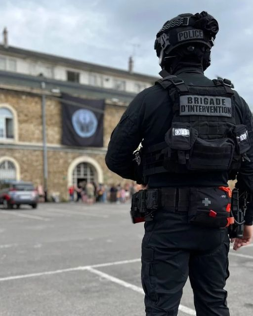

voici un millitaire appeller brigade d'intervention.

La BRI est une unité spécialisée dans
:
les interventions à haut risque
les prises d’otages
le terrorisme
l’arrestation de criminels dangereux
les filatures, surveillances, et enquêtes complexes
Elle fait partie de la Police judiciaire.
Les missions principales
Intervenir lors d’attaques ou prises d’otages
Neutraliser des individus armés et dangereux
Appuyer d’autres services de police
Conduire des arrestations sensibles
Protéger certains sites ou personnalités lors d’opérations spéciales
air france
Qui est Bacar Said?